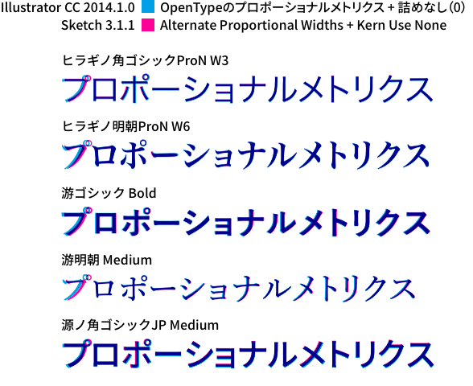

文字詰めができるアプリケーションというと、やはりAdobeのプロダクトがその筆頭でしょう。裏を返せば、それ以外のアプリケーションでは、まともに文字詰めができるものがない、という状況です。Sketchが大々的にフィーチャーされる最中、やはり文字詰めができないことを気になさっている方が大勢いらっしゃいました。
しかし、OpenTypeの機能を使うことで、実は文字詰めができることはご存知でしょうか？
今回は、Sketchをはじめとした、Adobeアプリケーション以外で文字詰めをする方法をご紹介します。
Sketch用にプラグインをつくりましたので、こちらもどうぞ。
タイトルには「Sketch」と入れましたが、それ以外のアプリケーションでも以下の条件を満たせば、文字詰めできる可能性は高いです。
- フォントがOpenTypeフォントである
- OpenTypeフォントの文字ごとに設定されている、プロポーショナルメトリクスの値を使用するため、OpenTypeフォントである必要があります。
- 使うアプリケーションで、OSのフォントパネルまたはTypographyパネルを表示できる
- OpenTypeフォントの機能を使うために、OSのフォントパネルからTypographyパネルを表示する必要があります。「フォントパネル」としていますが、実際に使うTypographyパネルが表示できれば、その経緯は問いません。
OpenTypeの機能を使って文字詰めをする手順
ここでは、Sketchを使って解説を進めます。
まずは文字を適当に入力し、OpenTypeフォントを適用します。ここでは、OSXにバンドルされている「ヒラギノ角ゴシックProN W3」を使っています。

OSのフォントパネルを表示します。Sketchでは、「View → Show Fonts」です。
表示されたフォントパネルにある「歯車」マークから、「Typography…（タイポグラフィ…）」を選択します。
Typographyパネルが表示されたら、「Text Spacing（文字間隔）」を展開します。
テキストの内容を選択し、「Alternate Proportional Widths（代替プロポーショナル幅）」を適用すると、文字に設定されているプロポーショナルメトリクスに応じて、文字が詰まります。
- スクリーンキャスト
- Sketchでプロポーショナルメトリクスを適用
ちなみに似たような「Proportional Widths（プロポーショナル幅）」という項目がありますが、こちらはプロポーショナル字形を使うオプションで、参照される文字コード（CID）が違います。
また、フォントがプロポーショナル字形を持っている必要があり、さらにアプリケーションによっては、プロポーショナル字形を持っているにも関わらず、きちんと適用されないことがあるようです。使えたらラッキーぐらいで思っておきましょう。
- プロポーショナル字形については、こちらで詳しく解説されています。
- プロポーショナル字形とは何か – なんでやねんDTP
ということで、あえて「Proportional Widths（プロポーショナル幅）」を使う必要はありません。
Illustratorとの比較
あまり意味はないですが、SketchとIllustratorの比較です。Illustratorで文字を作成し、ビットマップとしてSketchへコピー & ペーストしています。バウンディングボックスを基準にしているため、ほぼ同じ位置にはなっていますが、若干のずれはあります。
- Illustrator CC 2014.1.0 : プロポーショナルメトリクス有効 ＋ カーニング「0」
- Sketch 3.1.1 : プロポーショナルメトリクス有効 ＋ Kern > Use None

- Illustrator CC 2014.1.0 : プロポーショナルメトリクス有効 ＋ カーニング「自動」
- Sketch 3.1.1 : プロポーショナルメトリクス有効 ＋ Kern > Use Default
Sketchでは行頭の文字がやや詰まっている状態ですが、全体的にはほぼ同等な感じです。そもそも「Sketchで文字組」というのは、本来の用途ではないと思うので、これで十分ではないでしょうか（きちんと文字組するのであれば、InDesignやIllustratorを使った方がいいですね）。
その他のOpenTypeの機能と利用できるアプリケーション
Typographyパネルには「Text Spacing」以外にも項目があり、合字やルビなどのOpenTypeの機能も使うことができます。パネルに表示されつつも、実際に有効になるかどうかは、フォントやアプリケーションによって異なります。
また、アプリケーションによって、Typographyパネルに表示される項目そのものが異なります。
例えば「Keynote ’09」では、Sketchで表示されている項目にプラスして異字体まで使えますが、「Keynote 6」は異字体を使えるものの、なぜか他の項目がオミットされています。（OSX 10.10をまだインストールしていないので、最新版のKeynoteでどうなっているのかはわかりません…）
その他でTypographyパネルを表示して、プロポーショナルメトリクスが適用できることを確認できたのは、以下のアプリケーションです。
- Sketch
- Pixelmator
- Keynote ’09
- iMovie ’09
- テキストエディット
- Jedit X
- Acron
おそらく、結構前から使えたんじゃないかなぁと思うのですが、つい先日、iMovieで「Sketch 3の基本。」のスクリーンキャストを編集している際に、偶然にも発見に至りました。これで「文字詰めが手動」と言われ続けたSketch（をはじめとした非Adobeプロダクト）が、少しは利用しやすくなったのでは？と思います。